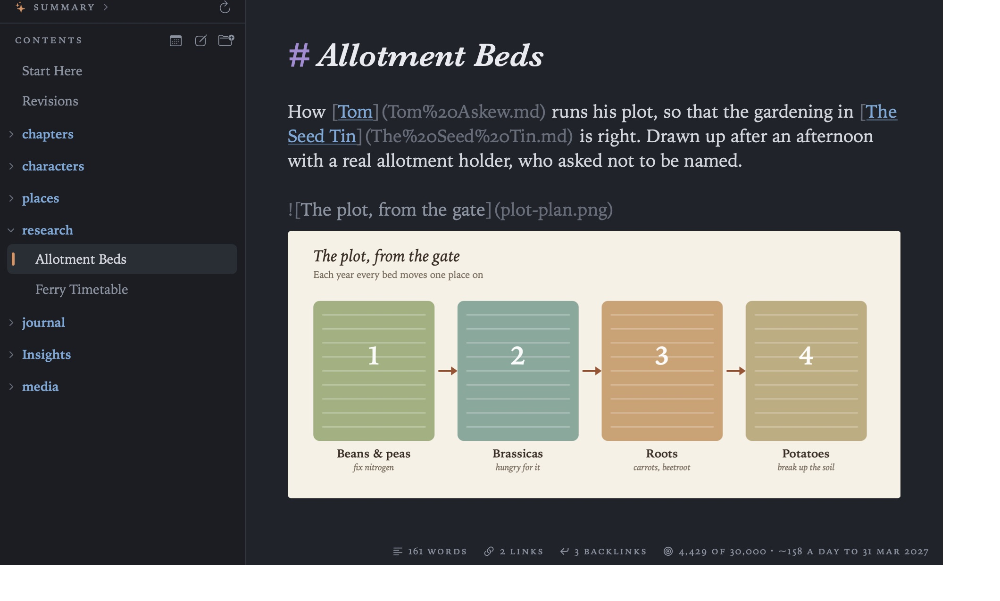
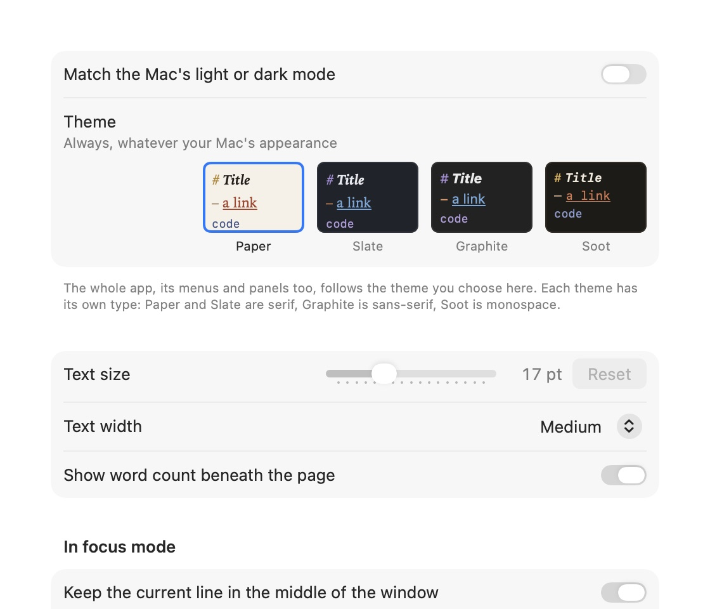
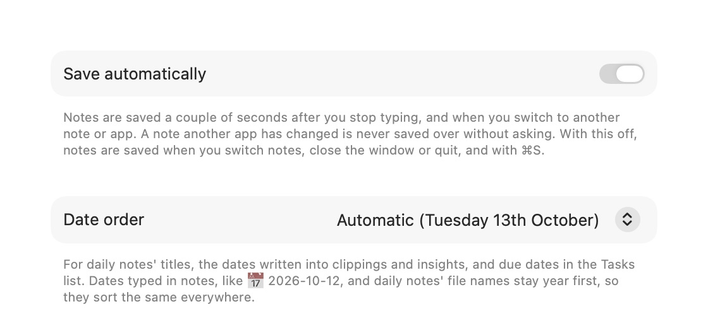
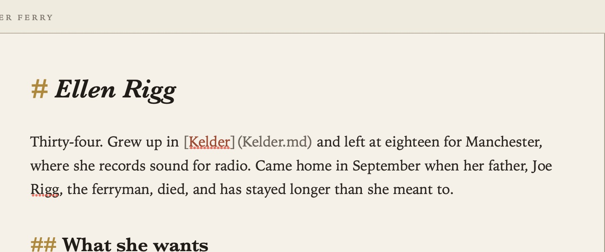

Themes and Settings
Grasmere is meant to be calm to read and write in, with a readable column of text in good type and your document’s structure shown quietly. This guide covers how the page looks, and lists every setting in one place. To open Settings, choose it from the Grasmere menu or press ⌘,.
Themes
There are four themes, each with its own type:
| Theme | Light or dark | Type |
|---|---|---|
| Paper | Light | Serif: cream paper and coloured inks |
| Slate | Dark | Serif: blue-grey |
| Graphite | Dark | Sans-serif: neutral grey |
| Soot | Dark | Monospace: Paper’s inks by lamplight |
To have Grasmere go light and dark with your Mac, turn on Match the Mac’s light or dark mode in Settings ▸ Appearance and choose a light theme and a dark one. Turn it off to keep one theme all the time, whatever your Mac is doing. The whole app follows the theme, menus and panels included.

Text size and width
- Text size is in Settings ▸ Appearance. You can also press ⌘+ and ⌘− to change it, and ⌘0 to go back to the usual size (17 pt).
- Text width is Narrow, Medium, Wide or Full window.

When you change the size or width, the line you were reading stays where it is.
Every setting
General

- Save automatically: see Saving, Safety and Git.
- Date order: Automatic, Day first, Month first or Year first. It’s used for journal entry titles, the dates written into insights and due dates in the Tasks list.
- Save in these folders: Pictures and videos, and Insights.
- Journal: Folder, Template and File names. See Journal.
- Research: where File ▸ Save Web Page, the Share menu and New Document from Clipboard save web pages (
researchby default). See Research. - Markdown files: which app opens
.mdfiles when you double-click them, with a button to make it Grasmere. See The Contents. - Show images from the web.
- Spelling: Check spelling while typing, and the language.
- Markdown problems: Check the Markdown as you write. See The Margin.
- Writing replay (experimental): Allow recording how documents are written, and the timestamp service. See Writing Replay.
Appearance
- Themes, text size and text width, as above.
- Show word count beneath the page.
- In focus mode: Keep the current line in the middle of the window, and Fade all but the current paragraph. See Focus Mode and Split View.
- Name documents in the sidebar by, Show images in the contents, Show project.md in the contents, Show index.md in the contents and Show research.md in the contents and Manuscripts. See The Contents and Citations.
Links
- Update links automatically when documents move, and Ask first when more than 25 documents would change.
- Shorten link addresses.
- Turn pasted web addresses into titled links.
See Links and Backlinks.
Capture
- Show in menu bar, Open at login, the keyboard shortcut, and which project captures go to. See Quick Capture and Sharing.
AI
- Provider and API keys, and how much Copy as Context copies. See Ask Your Documents and AI.
Automation
These settings belong to the open project.
- Git: commit changes after saving, and push after committing.
- Commits: the name and email to use when the repository doesn’t set its own.
- Run a shortcut when a document is saved, created, renamed or moved, or the project is opened.
- Publish with: the Shortcut Project ▸ Publish runs, whether to build the website first, and whether to include linked files, the research folder and saved insights.
See Saving, Safety and Git and Publishing.
Accessibility
Grasmere works with VoiceOver, and respects Reduce Motion and Increase Contrast in System Settings ▸ Accessibility.
